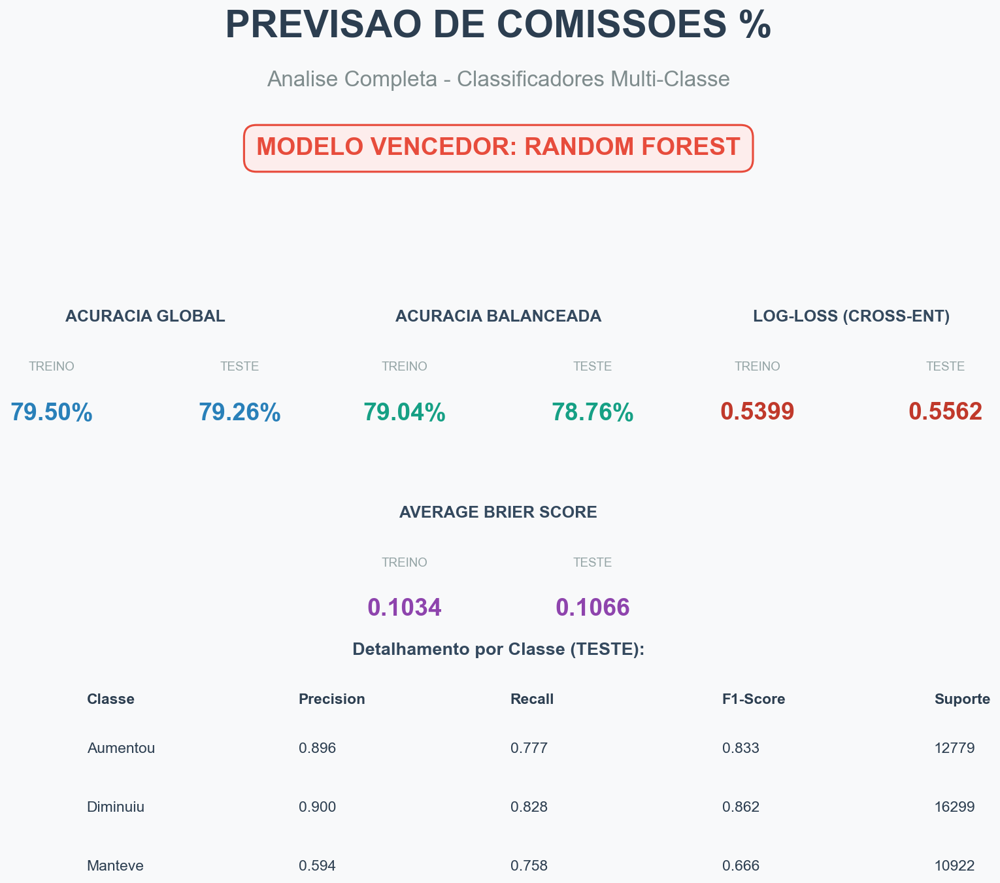
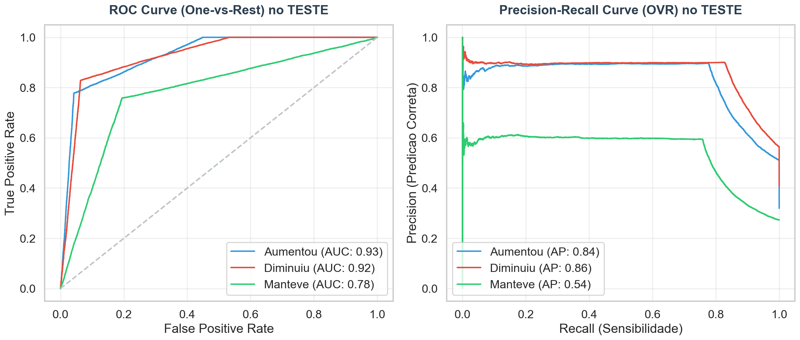
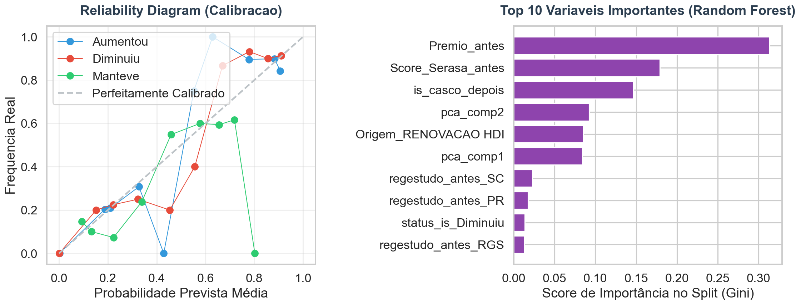
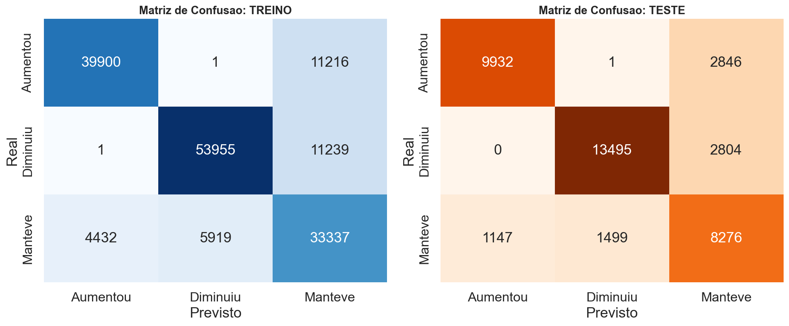
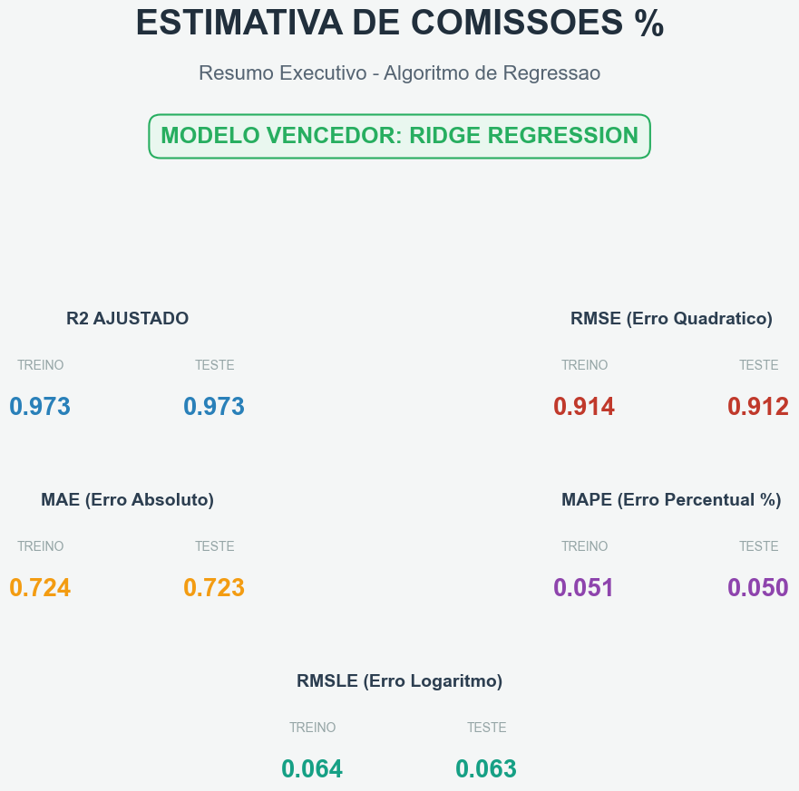
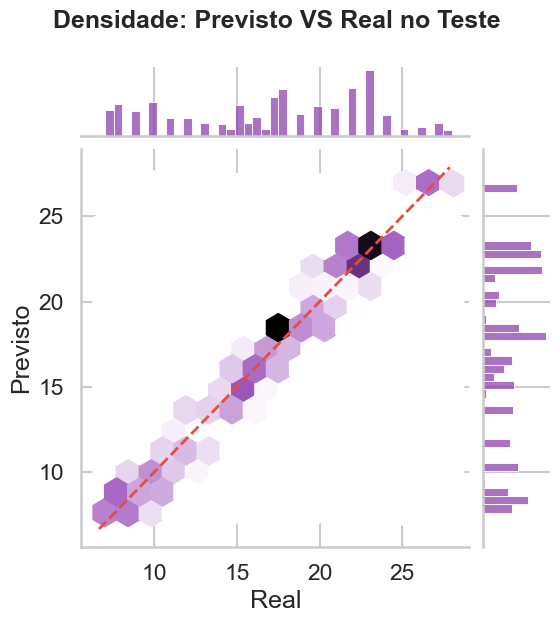
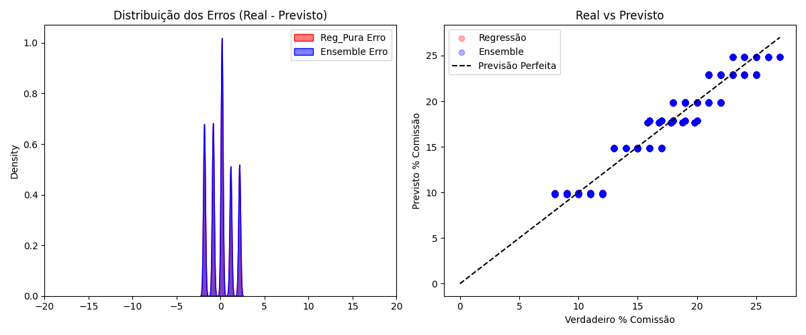
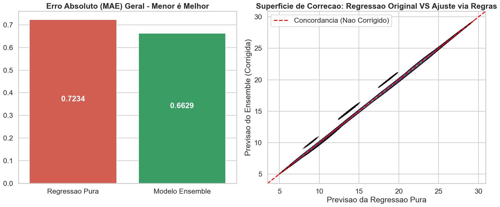

Pipeline completo de Machine Learning para elasticidade de comissão de corretores em renovações de apólice.
Este documento compila a interpretação corporativa e a defesa técnica do Pipeline de Aprendizado de Máquina construído para prever a elasticidade da margem de comissão de corretores de seguro em renovações.
O arcabouço tecnológico processou 200.000 perfis sintético-baseados, passando por motores de extração discriminatória, Random Forests, Penalizações por Ridge Regression e Heurísticas Especialistas de Ensemble.
A base originária submetida apresentou imensa robustez, no entanto exibiu a carência natural e massiva de atributos terceiros (como falta de retornos nos Scores do Serasa e Receita Federal). Estes representaram ~115.000 missings estruturais da carteira.
Através de medianas agrupadas e imputações com Análise de Componentes Principais (PCA) para features secundárias, blindamos a perda de sinal. Adicionalmente, variáveis críticas sofreram Feature Engineering, originando matrizes de Diferença (Ex: mudanca_premio) e "Scores Históricos Integrados", injetando "Senso de Direção Preditiva" (Business Pattern Signaling) no tecido da base.
Conclusão da Qualidade: O dataset transmutou de uma matriz de 46 colunas ruidosas para um campo lapidado de Top 15 Features super-preditivas, limpando o ruído matemático.
(Decifrando se o Corretor "Manteve", "Diminuiu" ou "Aumentou")
O relatório Relatorio_Classificacao.pdf explicitou uma vitória clara do algoritmo Random Forest frente ao Decision Tree baseline, via seleção por Forward Selection das top-15 Features mais preditivas e GridSearch (CV=3).

| Classe | Precision | Recall | F1-Score | Suporte |
|---|---|---|---|---|
| Aumentou | 0.896 | 0.777 | 0.833 | 12.779 |
| Diminuiu | 0.900 | 0.828 | 0.862 | 16.299 |
| Manteve | 0.594 | 0.758 | 0.666 | 10.922 |
A classe Manteve apresenta F1-Score inferior (~0.67) — comportamento esperado em cenários de equilíbrio de preço, onde o sinal preditivo é naturalmente mais tênue. As classes Aumentou (F1: 0.83) e Diminuiu (F1: 0.86) demonstram alta assertividade direcionalmente, que é exatamente o valor de negócio essencial para o precificador.
As curvas OVR comprovam o poder discriminatório do modelo em todas as três classes. Os valores de AUC para Aumentou (0.93) e Diminuiu (0.92) estão próximos ao teto prático, enquanto o AUC de Manteve (0.78) reflete a classe naturalmente mais difusa. A classe com maior Average Precision (AP) na curva PR é Diminuiu (AP: 0.86), seguida de Aumentou (AP: 0.84).

O Reliability Diagram demonstra que as probabilidades emitidas pelo modelo são honestas: quando o modelo afirma "80% de chance de Aumentar", este evento se concretiza em ~80% dos casos reais. O gráfico de Feature Importance pelo Índice Gini revela que o Premio_antes e o Score_Serasa_antes são as variáveis mestras, evidenciando que o modelo reproduz o raciocínio do analista de negócios.

Premio_antes e Score_Serasa_antes lideram.
As matrizes de confusão evidenciam a consistência do modelo entre os conjuntos de Treino e Teste: a diagonal dominante confirma baixíssima taxa de confusão entre classes opostas (Aumentou ↔ Diminuiu), que representaria o erro de maior custo de negócio. Os erros observados concentram-se na fronteira com Manteve, que é o comportamento esperado e aceitável.

(Computando o Valor Integral do Retorno Monetário / Margem %)
A predição numérica lidou com desvios percentuais com métricas excelentes, visíveis no Relatorio_Regressao.pdf.

O Hexbin Scatter de densidade aponta forte Homocedasticidade: a nuvem de pontos se mantém colada à diagonal de concordância perfeita em todo o range de comissões — de tickets baixos a altíssimos — sem alargamento de erros nas extremidades.

(A Proteção Especialista Blindando as Máquinas)
Com as duas redes rodando separadas, usamos o analista de seguros humano como ponte lógica por cima de tudo (Relatorio_Combinado_Ensemble.pdf).
Se a IA Direcional classificou categoricamente ser caso de "Preço Mantido", e o Regressor calculasse matematicamente +2.3% por ruído paramétrico — qual aceitar? Cortamos o regressor e priorizamos a inteligência estrita! Em caso de discordância grave (Classificador aumenta, Regressão cai), nossa equação penaliza a incerteza subtraindo a diferença.
O Ensemble corrigido reduziu o MAE de 0.7234 (Regressão Pura) para 0.6629 — uma redução de ~8,4% no erro absoluto simplesmente pela aplicação das regras de negócio do precificador especialista sobre a saída bruta do modelo.


O "Comission Predictor V2" estabelece o atual estado da arte do que a técnica de Data Science de seguros exige.